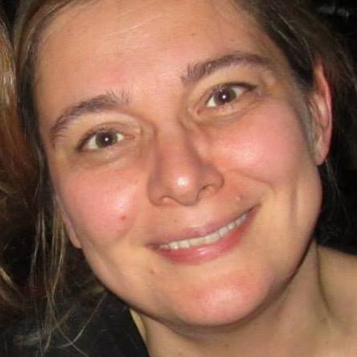
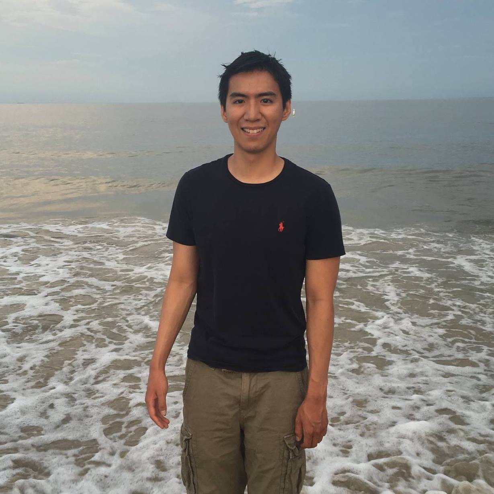

The purpose of this lecture series is to bring
together undergraduate and graduate STEM students with former
STEM majors who are now working in Data Science. Each lecture
will begin with a 20 minute presentation by a former STEM major,
followed by a question and answer session designed to give the
participants a clear idea what it would be like to work in the
data science field, and what skills they would need to acquire
to successfully enter that industry. Some speakers are Ph.Ds and
former research mathematicians. Others received undergraduate
degrees in STEM fields and went into industry directly. The
talks will take place on Mondays at 8 p.m. EST.
Monday, September 20, 2021
Speaker: Scott Kirila, (Parker Avery) (
video)
Time: 8.00 p.m. EST
Zoom: 573 239 4086
Title: A journey from the Riemann zeta function to sales
analytics
Abstract: Dr. Scott Kirila, a current analyst at Parker
Avery, and a former UR PhD recipient in analytic number theory
(under the direction of Steven Gonek) is going to talk about his
current job in data analytics, and how his research mathematics
skills give him an edge in this highly competitive and rapidly
growing industry.
Monday, September 27, 2021
Speaker: Erin Terwilleger Mullen, (Antuit) (
video)
Time: 8.00 p.m. EST
Zoom: 573 239 4086
Title: From harmonic analysis to sales analytics
Abstract: Dr. Erin Terwilleger Mullen, a current analyst
at Antuit, and a former University of Missouri Ph.D. in harmonic
analysis (under the direction of Loukas Grafakos) is going to
talk about her data science work at Prognos and Antuit, and how
her mathematical background gave her an edge in the data science
industry.
Monday, October 11, 2021
Speaker: Sanja Hukovic, London Stock Exchange (
video)

Time: 6.00 p.m. EST
Zoom: 573 239 4086
Title: Careers in model risk
Abstract: Sanja Hukovic is the Head of the Head of Model
Risk Management at the London Stock Exchange. Her model
validation career started in UBS Quantitative Risk Control,
where she was first the product head for the securitised product
in New York, and then Deputy Head and Product Head for EQ, FZ
and Client Portfolio teams in London and Zurich. Sanja then led
the UBS quantitative risk standard team, which part of risk
methodology group focusing on Risk Based PnL, and quantitative
risk measures. She returned to model validation to cover UBS
Treasury, Operational Risk, and AML models. Sanja worked for
three and a half years as JP Morgan head of Quality Assurance
for Model Risk Governance and Review and JP Morgan Chase and Co.
Monday, October 18, 2021
Speaker: Kevin Lin (
video)

Time: 6.00 p.m. EST
Zoom: 573 239 4086
Title: A random walk down Silicon Valley
Abstract: Dr. Kevin Lin will talk about his winding path
from a Ph.D. in probability theory at UR, under the direction of
Carl Mueller, through sinking like the Titanic at statistics
contests, making friends at data science boot camps, three
positions, two office openings, and 15 times the coworkers in 3
years, to where he sits today as an ML engineering manager at
Upstart.